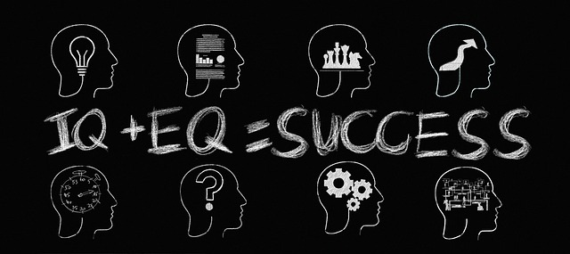

EQ vs IQ
Describe the difference between EQ and IQ.
Emotional intelligence (EQ) is defined as the ability to perceive, control, and evaluate emotions. IQ, short for intelligence quotient, is a measure of a person’s reasoning ability. In short, it is supposed to gauge how well someone can use information and logic to answer questions or make predictions.
Your IQ usually refers to your intellectual ability. Some of the most common elements of your IQ include your ability to:
Your emotional quotient (EQ) generally refers to your ability to sense emotion in yourself and in other people. It also refers to how you use that awareness to guide your behavior. In general, if you have a high EQ, you may find it easier to:
Describe why EQ is important.
Intellectual ability or your intelligence quotient (IQ) isn’t enough on its own to achieve success in life. Your IQ can help you get into college, but it’s your EQ that will help you manage the stress and emotions when facing your final exams. IQ and EQ exist in tandem and are most effective when they build off one another.
Emotional intelligence affects your performance at school or work. High emotional intelligence can help you navigate the social complexities of the workplace, lead and motivate others, and excel in your career. In fact, when it comes to gauging important job candidates, many companies now rate emotional intelligence as important as technical ability and employ EQ testing before hiring.
Emotional intelligence affects your physical health. If you’re unable to manage your emotions, you are probably not managing your stress either. This can lead to serious health problems. Uncontrolled stress raises blood pressure, suppresses the immune system, increases the risk of heart attacks and strokes, contributes to infertility, and speeds up the aging process. The first step to improving emotional intelligence is to learn how to manage stress.
Emotional intelligence affects your mental health. Uncontrolled emotions and stress can also impact your mental health, making you vulnerable to anxiety and depression. If you are unable to understand, get comfortable with, or manage your emotions, you’ll also struggle to form strong relationships. This in turn can leave you feeling lonely and isolated and further exacerbate any mental health problems.
Emotional intelligence affects your relationships. By understanding your emotions and how to control them, you’re better able to express how you feel and understand how others are feeling. This allows you to communicate more effectively and forge stronger relationships, both at work and in your personal life.
Emotional intelligence affects your social intelligence. Being in tune with your emotions serves a social purpose, connecting you to other people and the world around you. Social intelligence enables you to recognize friend from foe, measure another person’s interest in you, reduce stress, balance your nervous system through social communication, and feel loved and happy.